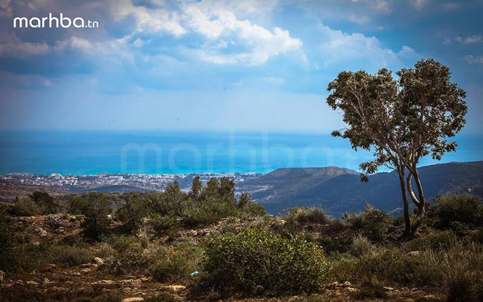

Hammamet

est souvent présentée comme une station balnéaire, l'une des principales du pays. Le développement récent de la marina de Yasmine Hammamet renforce l'importance de l'industrie touristique dans l'économie locale. En effet, réputée depuis la deuxième moitié du xxe siècle, la ville offre aux touristes de longues plages le long du golfe portant son nom.